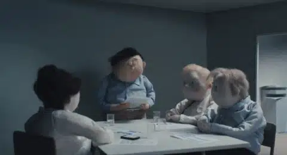
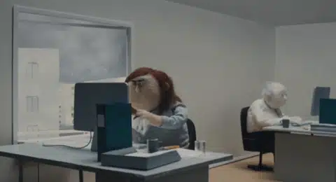
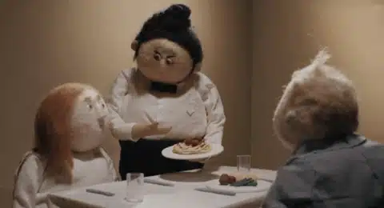
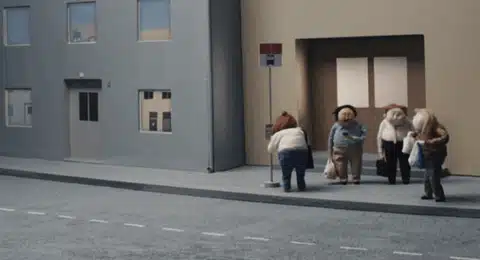
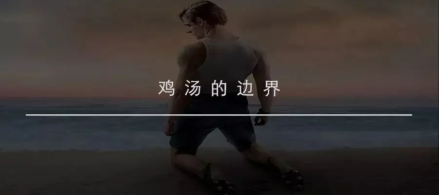
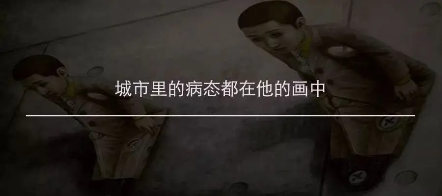

id="js_content" style="">
正文共计2500字左右
预计阅读时间4min
转载请在后台回复“授权”
△杭州小伙骑单车逆行被查，情绪瞬间失控
一个网友曾写道：
现代人的崩溃，是一种默不作声的崩溃。
看起来很正常，会说笑、会打闹、会社交，表面平静，实际上心里的糟心事已经积累到一定程度了。
不会摔门砸东西，不会流眼泪或歇斯底里。
但可能某一秒突然就到极致了，也不说话，也不崩溃，也不太想活，也不敢去死。
最近一个杭州小伙就真实再现了这段话描述的情形。
小伙子因为单车逆行被抓。
紧接着，他在电话中告诉另一个人，自己因为逆行被抓暂时走不了，可能还需要两三分钟才能回去。
小伙子讲电话时的语气很平静。
可挂断电话后，他立马崩溃了。
先是情不自禁地摔手机，接着又心疼地捡起手机。
后来就开始向交警哭喊，“我真的好冤啊，我第一次做这种事....催着我快点走，我加班，我赶回去有事.....”
情绪激动下，小伙子忽然跪倒在地上向交警道歉，并要将自己的身份证、钱包交给交警。
只求交警赶快放自己走。
警察见状有些懵，要将身份证归还小伙子。
可小伙子已经情绪失控，跑向桥边意欲轻生，被交警拉下来后，他蹲坐在路旁大声嘶喊、嚎啕大哭：“我疯了....我真的好烦.....自己都不会带钥匙，我每天加班到这么晚......”
原来，小伙子是要赶着回去给女朋友送钥匙，同时，公司里还有一大堆事等着他回去加班。
而逆行被抓是让他情绪崩溃的最后一根稻草。
可即使是崩溃，视频中小伙子口中最多的词却是，“谢谢你们”、“对不起”。
明明自己已经心累到爆炸，可还是不想麻烦别人。
这就是藏在现代人心中隐而未现的痛，当它暴走的时候，让无数人泪目。
这并不是软弱，而是专属于这个“新时代”的伤疤。
相比于上一代人。
我们不曾经历过战火，也未曾被邻居举报，更少有挨饿受冻的遭遇。
我们没有经历过暴风骤雨，也没有在惊涛骇浪中肆意宣泄自己的情绪。
我们所面对的，是从不间断的阴雨绵绵。
那种冷意“恰到好处”，它不会让我们痛到立马爆发，却水滴石穿般将我们的灵魂击碎，直至很多年轻人未老心先衰，却也不知道缘由。
幼儿园三年，小学五年，初中三年，高中三年。
14年，我们不为知识，只为分数。
没有兴趣，只有排名。
同学间鲜有珍贵的友谊，多是明争暗斗的互相争竞。
个中苦闷，你也很难向家人诉说，因为他们已经为了你的“前途”赌上了自己的全部。
你只有硬着头皮，压抑着自己的天真，埋头在书桌中，口中反复背着“物质决定意识，意识反作用于物质......社会主义的本质要求是.....内在要求是.....根本要求是........”
直至你常识不分、逻辑全无。
终于上了大学，才蹦跶了几下后，却发现，社会上最不值钱的就是大学生。
又一次，你和成千上万人为了一份工作争的面红耳赤。
终于找到一份工作后，你“衣锦还乡”，享受最后的“宝宝时光”。
你才发现，当年那些落败的同龄人早已经成家买房，而故乡的房价在你读大学的四年里已经翻了好几番。
回不去的家乡，十几年争竞下心高气傲的你只能远走他乡。
亲戚朋友以为你在大城市的生活像电视剧中那样灿烂，岂不知你在城市中渺小的像一只蚂蚁。
996下忙到你没有自己的生活。
加班熬夜、头脑恍惚，然后再花上几千块钱蜗居在十几平方的房子里。
对着天花板，泪水已经无法从空洞的眼睛中流出，而是直接内注到自己的心里。
自怜自爱，时而狂妄，时而失落。
自我到可以蔑视一切，却常常是失去社交意愿和能力的爱无能。
最要命的是，你想要吐槽这一切，却没有一个人愿意驻足听你讲话，就是听也难以理解你的感受。
你只能习惯这一切，习惯一个人。
什么事都自己完成，什么苦水都自己咽下。
城市的压力和冷漠告诉你最不能做的就是麻烦别人。
你快乐，无人可以分享。
你悲伤，无人真正在乎。
你就是那城市中四处飘荡的“孤魂野鬼”。
......
我的描述也许会让大家喘不过气，那是因为文字可以一下子将这些感受密集地写出来。
实际生活中，这些感受是碎片的，散落在拥挤的地铁中，游荡在硝烟四起的办公室里，挥撒在家中柴米油盐里。
悄无声息却让你隐隐作痛。
生活总得继续，这些痛只能藏起来，不能挂在脸上。
直到像那个小伙子一样，在瞬间被一件小事点燃。
曾有一部很可爱的定格动画短片《enough》（译作：受够了），就生动地表现了这些"脆断”时刻。
这是一部脑洞大开又细思极恐的短片。
短片中的人物再现了我们在某一时刻的愤怒心情，同时还做了我们敢想不敢做的事情。
比如自己做的方案前前后后改了很多稿，会议上，同事依旧提出一些过分要求，要你再进行修改。
于是，你当场爆发，将稿子丢掉并大吼大叫。

再比如，你急着赶工，可电脑却卡住不动了，一怒之下，你直接将电脑抛出窗外。

你辛辛苦苦为家人准备了美味的晚餐，可孩子却挑食不吃，你恨不得直接将饭扣在她脸上。

短片中最后一个场景最可爱，拎着大包小包赶公交，尽管已经用尽了全力，却依旧错过了公交。
心好累，不管了，那就直接躺在路边！

现实中，我们当然不能像短片中那样率性而为。
面对这些困境。
我听过最厚黑的鸡汤：“吃得苦中苦，方为人上人”。
我也看到过三观最正的鸡汤：“你还很年轻，将来你会遇到很多人，经历很多事，得到很多，也会失去很多，但无论如何，有两样东西，你绝不能丢弃。 一个叫良心，一个叫理想。”
甚至，还有最特立独行、最文艺的鸡汤：“孤单得躁狂的人去搞金属了，寂寞得哑言的人去搞后摇了。”
我也见到过很悲观的文字：“那时我们有梦，关于文学，关于爱情，关于穿越世界的旅行。如今我们深夜饮酒，杯子碰到一起，都是梦破碎的声音。”
还有很压抑的话：生而为人，我很抱歉。
也曾看到过令人心碎的对话：
“我很孤独用英语怎么说”
"I Love You"
这些都表现出了部分的真理。
可让我觉得最为特别的是在《圣经》中看到的一句话“凡劳苦担重担的人，可以到我这里来，我就使你们得安息。”
这句话非常独特。
它不是一句鸡汤话，也不是一句负能量。
这是一个邀请，它以一种柔和谦卑的态度告诉你，不用再自我励志，也不必悲观绝望，你要做的就是来叩门。
也许，人类的苦难根本就是人自己难以承载的，在自我中打转本来就是一种悲剧。
不论是鸡汤，还是负能量，这些都是两种极端的自我中心。
都是狂妄的自我封神。
一种认为自己无所不能，人定胜天。
另一种，则绝对自信这个世界和人生就是一堆垃圾，除了眼泪别无盼望。
也许，当我们真的走投无路时，我们最应该做的就是”欣然“赴约。
推荐阅读
▼
（点击图片即可获取全文）


这里没有挑逗你眼目情欲的小鲜肉
也没有挑动你肉体情欲的段子
更没有膨胀你今生骄傲的鸡血
我们只在乎那些最质朴真诚的作品
在那里我们才能恢复真正的想象力
我们也坚信这才是我们真正需要的

ID:Six_hundred_hits
长按二维码，一键关注
【六百击】
-END-
电影评论
尽情分享朋友圈

苹果打赏通道
小提示：文末广告是腾讯配送广告，内容与本号无关，但您的每次点击（无需反复点）都会给平台带来几毛收益，欢迎您点击支持六百击。